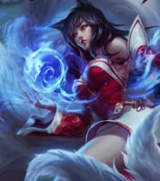
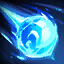
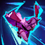

Ahri, la Mujer Zorro de Nueve Colas
Conectada al poder espiritual de Jonia, Ahri es una vastaya capaz de moldear la magia en orbes de energía pura. Tras descubrir su naturaleza depredadora, aprendió a sobrevivir absorbiendo la esencia vital de otros.
Dividida entre su humanidad emergente y sus instintos salvajes, Ahri busca comprender su pasado mientras lucha por encontrar su lugar en el mundo.
-
Pasiva — Ladrón de Esencia

Ahri obtiene acumulaciones al impactar habilidades. Al máximo, su siguiente habilidad la cura en función del daño infligido.
-
Q — Orbe del Engaño

Ahri lanza y recupera su orbe, infligiendo daño mágico a la ida y daño verdadero al regresar.
-
W — Fuego Zorruno
Ahri libera tres llamas espirituales que persiguen a enemigos cercanos, priorizando campeones.
-
E — Encanto
Ahri lanza un beso que daña y encanta al primer enemigo alcanzado, obligándolo a caminar hacia ella.
-
R — Impulso Espiritual

Ahri se desliza hacia adelante y dispara rayos de energía espiritual. Puede reutilizar la habilidad varias veces en un corto período.